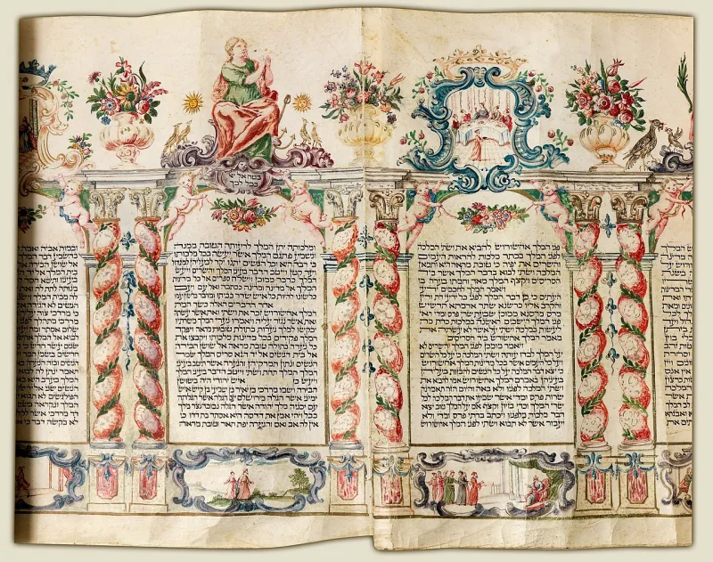
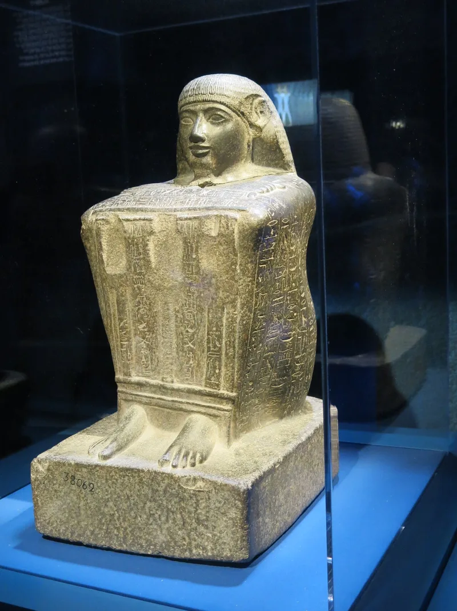

Haman in Pharaoh's Egypt, a thousand years early
UnrefutedNo good counter-argument has been published by Muslim scholars.
Where the Quran puts Haman
In Egypt, as Pharaoh's officer, in the time of Moses (Quran 28:6, 28:8, 28:38; 29:39; 40:24, 40:36-37). Pharaoh asks Haman to fire bricks and build a lofty tower, so he can look upon the God of Moses.
Where the Bible puts him
Haman is the vizier of the Persian king in the book of Esther (Esther 3:1). That is roughly a thousand years after Moses.
And the tower-to-heaven with baked bricks belongs to Babel (Genesis 11:3-4).
What that looks like
It reads as Esther's villain joined to the Babel story and moved to Egypt. That blend was already told in Jewish story-telling.
The Muslim answer, at full strength
Two lines are offered. The first is that this was a different man in Egypt with a like name.
The second comes from Maurice Bucaille and was built out by Islamic Awareness. The letters hmn-h turn up in a list of Egyptian names.
They belong to a chief of quarry men. So the Quran, they say, kept a real name that the world had lost.
How strong is this argument?
Strong for you, and the second answer does not survive checking. It rests on reading a German transliteration in a name lexicon.
The vowels are a guess. No Egyptologist accepts Haman as an Egyptian name.
And the quarry chief has no link to Moses's era or to a vizier's role. Meanwhile Adam J.
Silverstein, who is no Christian apologist, concludes in his Princeton and Oxford studies that both Hamans are the same folk villain, moving between the Persian and Egyptian courts. That concedes the decisive point: the Quran inherited a literary character, bricks and tower included, and set him in the wrong court.
What to say
"Haman is the villain of Esther, in Persia, a thousand years later. Would you read the two accounts with me?"



How they answer this — at its strongest
They say hmn-h in an Egyptian name list shows the Quran kept a lost name.
Two Muslim defences are offered. The first is that the Quran's Haman is simply another Egyptian with a like name.
The second is the scientific-miracle version. It comes from Maurice Bucaille and was built out by Islamic Awareness. The letters hmn-h turn up in a list of Egyptian names, as a chief of stone-quarry workers. So on this reading the Quran kept a real Egyptian name that history had lost.
The verdict
Strong for you: Silverstein, no Christian, calls both Hamans one folk villain.
The hmn-h argument falls apart on inspection. It rests on reading a German-transliterated entry in a name lexicon. The vowels are a guess. No Egyptologist accepts Haman as an Egyptian name. And the quarry chief has no link to the era of Moses, or to the role of a vizier.
Meanwhile the academic study is by Adam J. Silverstein, published by Princeton and Oxford. He concludes that both Hamans are one folk villain. The figure moves between the Persian and the Egyptian courts, as stories did in that world. Silverstein is no Christian apologist.
That frame grants what dictation from heaven cannot afford. The Quran took over a character from story, bricks and tower included, and set him in the wrong court. It pairs well with this site's Samaritan and Dhul-Qarnayn cases, as a third case of one pattern.
Sources
- Adam J. Silverstein, 'Haman' (Princeton University Press)
- Silverstein, 'Haman in the Qur'an' — chapter in 'Veiling Esther, Unveiling Her Story' (Oxford)
- Islamic Awareness — 'Biblical Haman, Qur'anic Haman' (the hmn-h defense)
- Jewish Review of Books — 'Haman, Builder of Towers, Brother of Abraham?'